珍寺的篠栗霊場巡り
1番 南蔵院 その1
さて、珍寺的篠栗霊場巡り、お次はいよいよ篠栗霊場の核心部、1番の南蔵院へと向かうことにする。
ここは以前紹介したこともあるが、再訪記ということでご覧いただければ幸いである。
他の札所にはあまり人がいないがここだけは別。観光客や巡礼者が大勢押し寄せてくる。
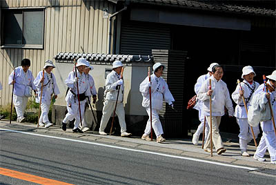
この日は気候もよく絶好の行楽日和。そして桜の花も最後の一仕事とばかり花びらを振りまいていた。
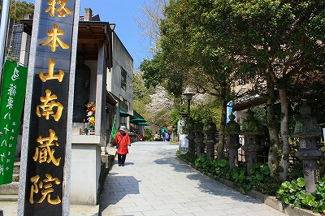 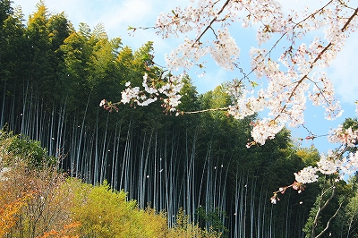
この南蔵院、篠栗霊場の1番札所であり霊場全体の総本山的役割を果たしている。
境内には様々な仏像が次から次へとあらわれる。
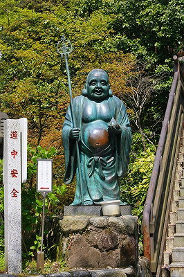 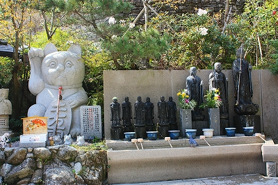
傾斜地にあるため滝も多い。
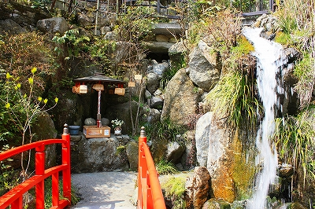
って何？これ。
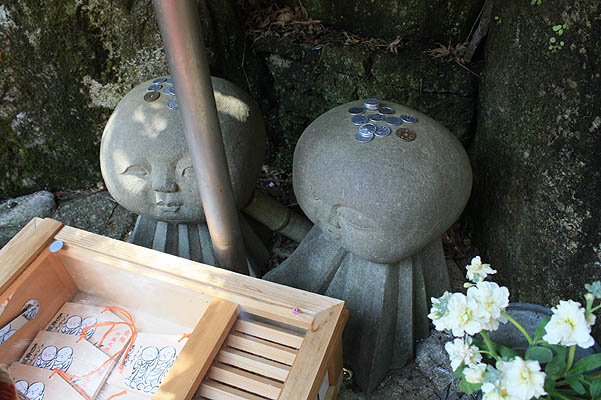
一瞬、火星田マチ子かと思っちゃいました。知っておろうな。
人工洞窟を潜ると先には巨大なコンクリ不動明王が。
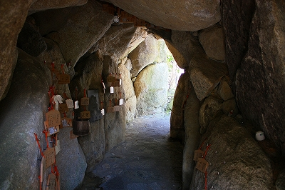 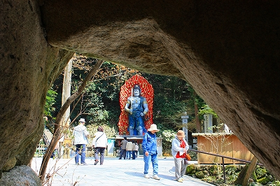
メラメラと怪気炎をあげる10メートル級のコンクリ不動である。
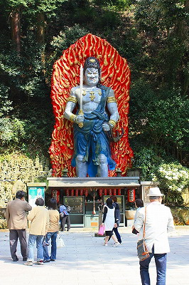
10年以上前に初めて見たときはこんなキテレツな不動さまは無い！と興奮したものだが、その後修行を重ねるにつれて実は九州ではそんなに突飛な造形ではない、ということが判明。九州の不動明王信仰の激しさは並じゃあないのだよ。
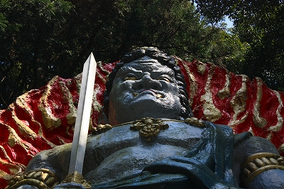
↑とっ、突飛ではないんだよ…こんな顔でも…
さて、不動サマの傍には五百羅漢像がひしめいている。
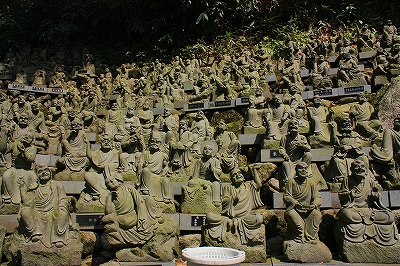 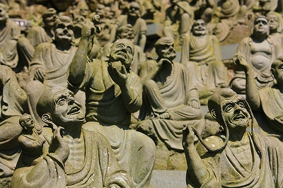
以前来たときは随分空きスペースが目立っていたが、今やみっしり埋まっていた。
中にはこんな素敵な石像もあったそうな。
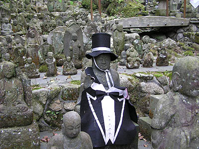
（Ｐｈｏｔｏ Ｈｉｇａｓｈｉ Ｓｈｉｎｉｃｈ）
横から見ると意外と薄い不動サマ。倒れないか心配である。
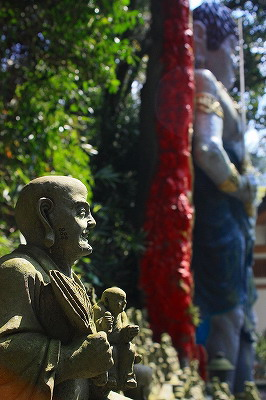 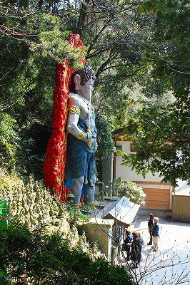
篠栗霊場は基本的に真言宗と山岳系の信仰が色濃く反映している。
ここ南蔵院もご他聞にもれず滝と不動明王のコンビが。
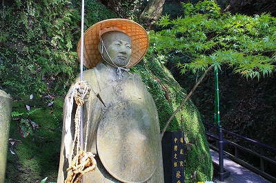 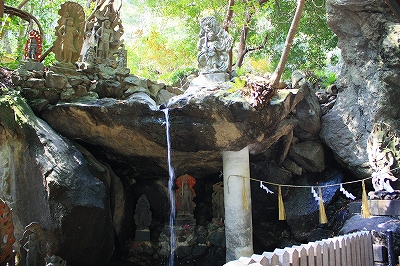
洞窟の中は線香の煙でムンムンでした。
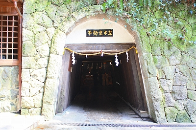 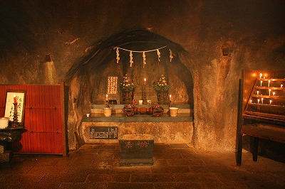
南蔵院は篠栗最大の規模の寺だが、寺院主導の造営だけではない印象を受ける。
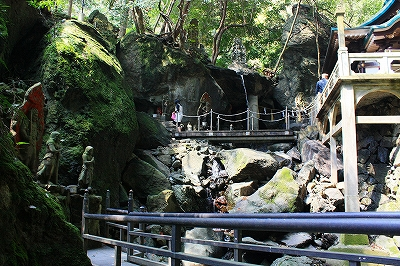
言い方は陳腐だが寺と参拝者が協力して、ある場面では信者、檀徒、巡礼者が中心となって作っているようにも思える。
民間の人たちにとっても「自分の寺」という意識に支えられているのかもしれない。
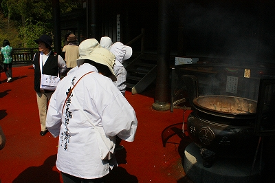
これは篠栗霊場全体にもいえることだ。
八十八ヶ所の霊場巡り自体は幕末に設置されたが、その後百余十年をかけて作り上げられた風景はまさに参拝する側と参拝される側の相互作用によってつくりあげられたように思える。
それが篠栗霊場を民間信仰の牙城としていった最大の要因であろう。
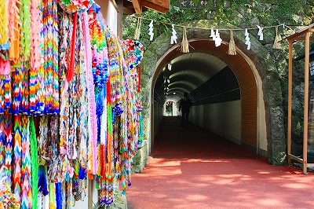
本堂の脇にはトンネルがある。
この先にあの方がおわします。
トンネルの先へトライアル！
珍寺的篠栗霊場巡りTOPへ
珍寺大道場 HOME